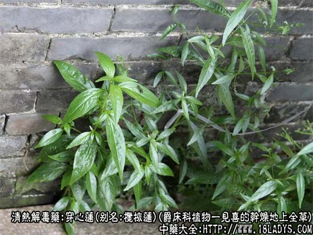
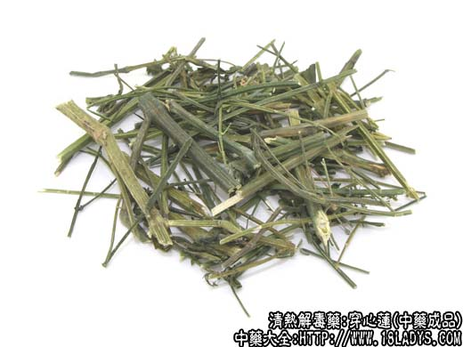
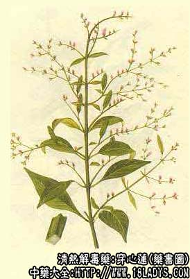

穿心莲为新兴中药。
别名：榄核莲。
来源：为爵床科植物一见喜的干燥地上全草。
植物形态：一年生草本。高达一米，茎直立，四棱形。分枝交互对生，节稍膨大。叶对生。卵状椭圆形，基部楔形渐狭成柄状，先端渐尖，全缘。顶生或腋生聚伞花絮，花白色。蒴果长椭圆形，两瓣开裂。
产地：我国江南各省，主产于广东、广西、湖南、福建、江西等地，野生或栽培。
性状鉴别：茎青绿色，四棱形，显抽沟，有交互对生的分枝。直径2～6毫米。质坚硬，折断面中心有髓。叶表面青绿色，背面灰绿色，多已脱落，皱缩或破碎。气微，味极苦。以茎长，叶多，色绿者为佳。
主要成分：含穿心莲内酯（又名雄茸交酯）和新穿心莲酯（又名新雄茸交酯）、穿心莲甲素（理化常数与新穿心莲内酯相似）、乙素（理化常数与穿心莲内酯一致）、丙素。
功效与作用：清热解毒，抗感染作用较强，但体外试验抑菌结果不一致，其抗感染原理有待进一步研究。
性味：苦寒。
归经：入心、肺经。
功能：清热、消炎、止痛、解蛇毒。
主治：菌痢、肠胃炎、扁桃体炎、咽喉炎、腮腺炎、肺炎、感冒、疮疖、毒蛇咬伤。
临床应用：广泛用于抗感染，包括呼吸道感染（上呼吸道炎、扁桃体炎、支气管炎、肺炎）、消化道感染（急性肠炎、痢疾）、泌尿系感染（尿道炎、肾盂肾炎）、皮肤化脓性感染（如疮疖等）和钩端螺旋体病。现多用片剂和注射剂，因其味极苦如用粉剂，须状如胶囊吞下，或糖水送服。又用其滴剂可治化脓性中耳炎。
用量：干品9～15g，粉剂0.6～1.2g，片剂每次3～4片，每日三次；注射剂每次2毫升（含生药5克）肌注，每日1～2次。